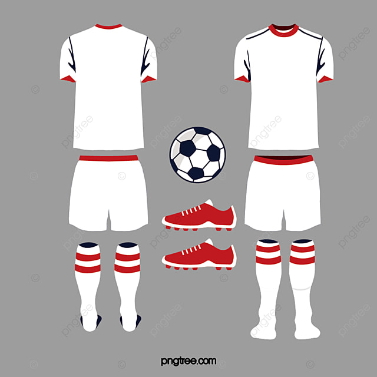

Ropa
Las reglas sobre la vestimenta y los implementos en el fútbol pueden variar según la liga, el torneo o la asociación que organice los partidos. Sin embargo, hay algunas normas generales que suelen aplicarse en la mayoría de las situaciones. Algunas de las restricciones comunes incluyen:
Joyas y objetos personales: Por razones de seguridad, se suele prohibir el uso de joyas, como anillos, pulseras, collares y aretes, durante el juego. Esto es para evitar lesiones a los jugadores y a otros participantes.
Objetos cortantes o peligrosos: Cualquier objeto afilado, cortante o potencialmente peligroso está prohibido. Esto incluye, por ejemplo, piercings en la cara que puedan representar un riesgo de lesiones.
